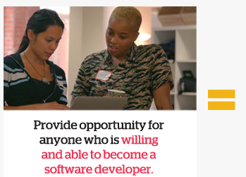

Today, millions of Americans are unemployed or underemployed. At the same time, there are currently hundreds of thousands of unfilled, high-paying, software engineering jobs. Our goal is to create a model that reduces friction and risk to help people reinvent themselves, and take full advantage of the unment demand for over 1.4M software engineering jobs that are estimated to be created in the next four years alone.
As a public benefit corporation, we seek to
 Create a program that advances our skills with a culutre that draws out the best in us.
Create a program that advances our skills with a culutre that draws out the best in us.

Provide oppornunity for anyone who is willing and able to become a software developer.
 Generate a dignified livelihood for everyone.
Generate a dignified livelihood for everyone.
THE METRICS BELOW ARE HOW WE TRACK OUR PROGRESS